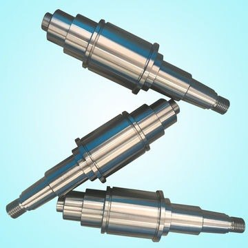
Shafts and spindles
Stepped, threaded and ground shafts for gearboxes, rollers and pumps.
Ø20–600 mm · up to 7 mAsk for a priceKieni’s Finest turns, mills, drills, cuts, bends, welds, grinds and forges steel and bronze parts to your drawing or sample. CNC laser-cut plate, shafts up to 7 m long and flanges to Ø1,200 mm. We deliver across Kenya and to South Africa.
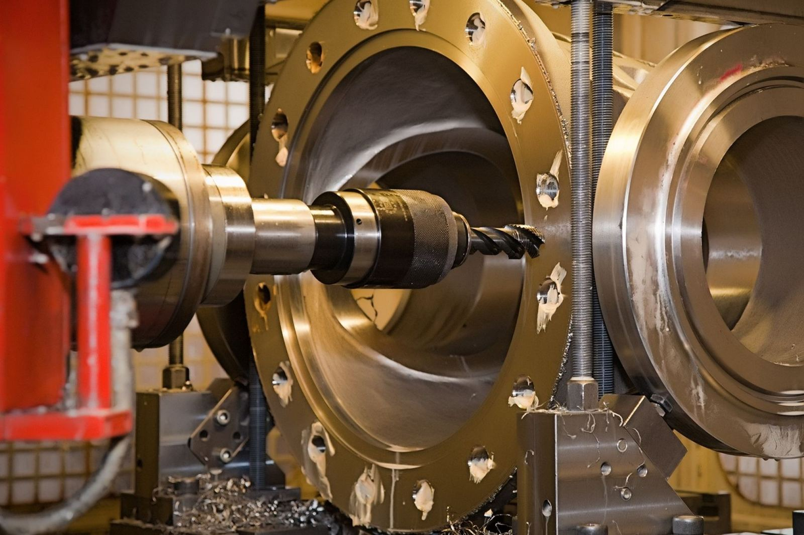
Finished parts, ready to fit. Every item is made to your drawing, sample or sketch. Choose “Ask for a price” and the quote form fills in the part for you.

Stepped, threaded and ground shafts for gearboxes, rollers and pumps.
Ø20–600 mm · up to 7 mAsk for a price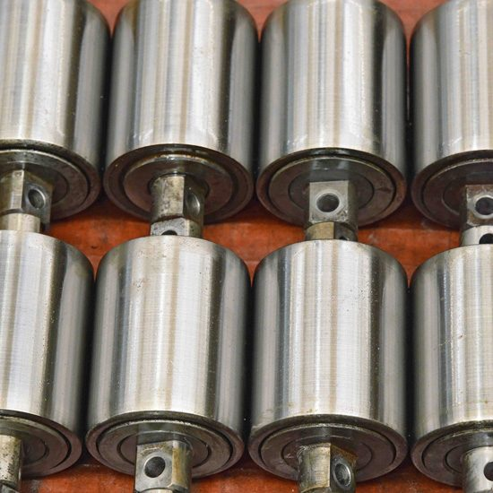
Turned and finished rollers with bearing seats, made to match your sample.
Any diameter you sendAsk for a price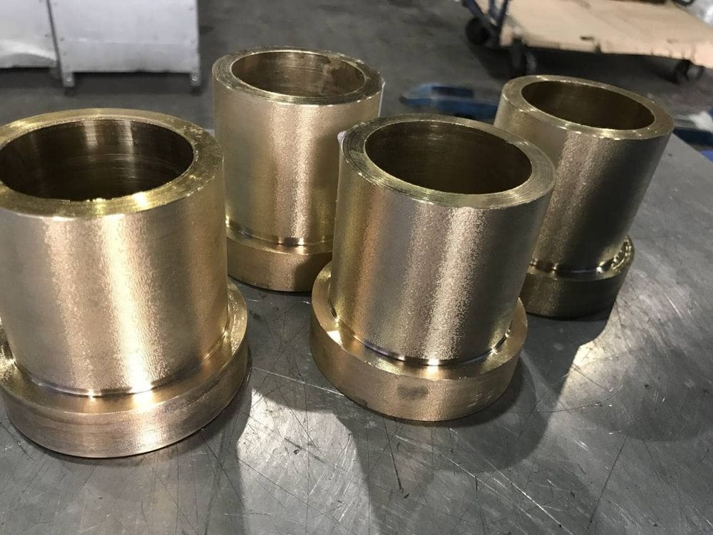
Plain and flanged bushes that replace worn ones and last longer.
Made from your sampleAsk for a price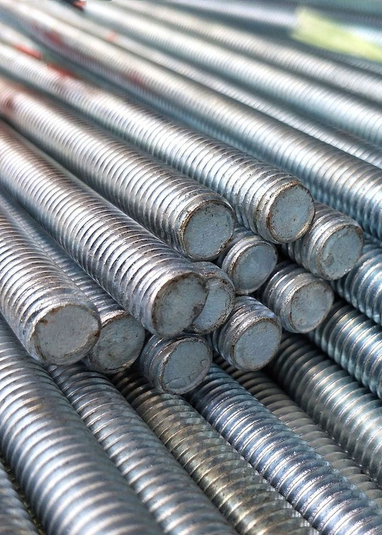
Cut to length and threaded for fixing, tie rods and lead screws.
Cut to your lengthAsk for a price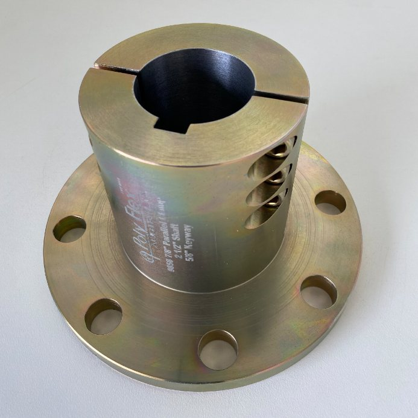
Drilled flanges, hubs and couplings with keyways and bolt circles.
Up to Ø1,200 mmAsk for a price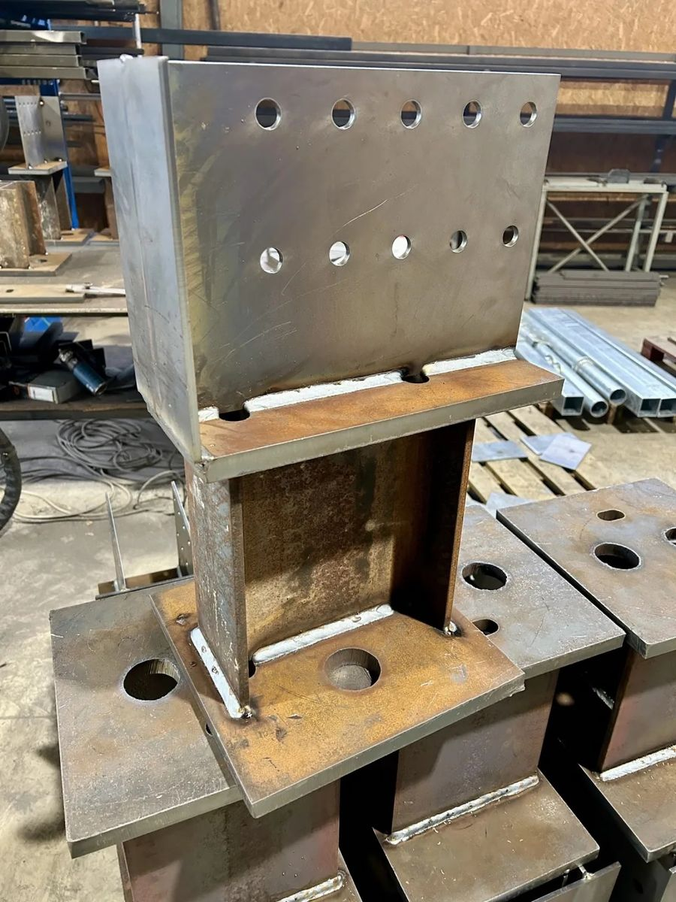
Welded and drilled base plates, brackets and fabricated frames for structures and machines.
Plate 6–40 mm thickAsk for a price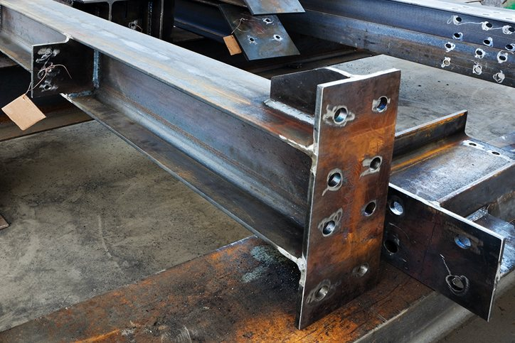
Beams, channels and columns drilled to your hole pattern for structural steel work.
Holes up to Ø50 mmAsk for a price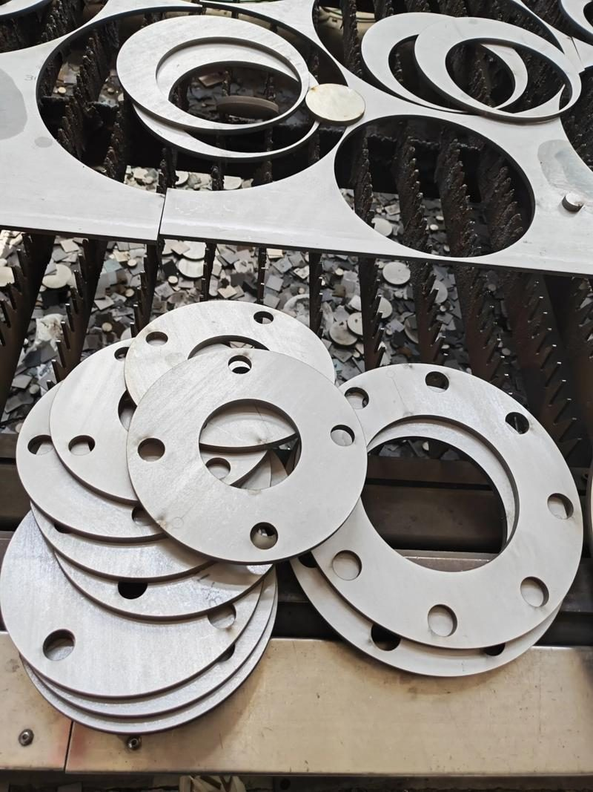
Plate blanks, flanges, discs and washers cut clean from your drawing.
Up to 40 mm · 6,500 mm bedAsk for a price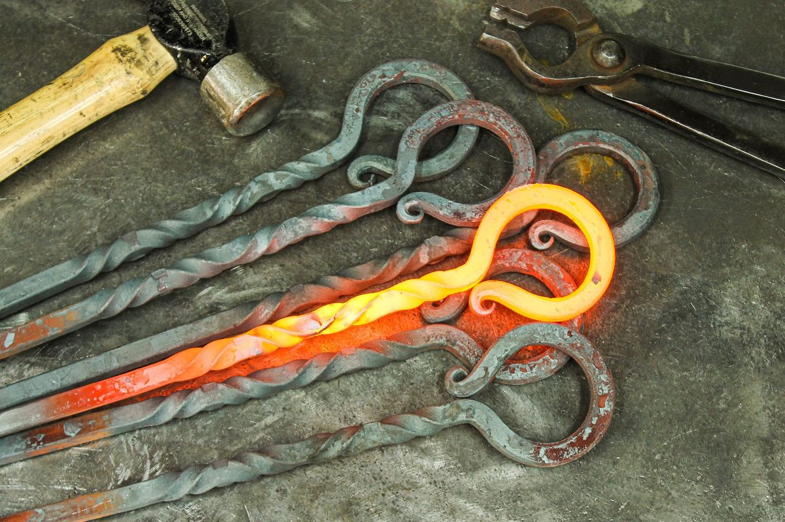
Forged shafts, hooks and tools, heated and hammered for strength.
Marsey forging hammerAsk for a priceCutting, forming, welding and grinding happen under one roof, so your job is not passed between workshops. These are the processes and the equipment behind them.
| Process | What we make | Capacity and equipment |
|---|---|---|
| Drilling | Base plates, flanges, beams, machine housings | Holes up to Ø50 mm, 2,000 mm reach. G. Breda R45-1210 radial drill, Churchill R-50, Grimston geared-head, pedestal drill. |
| Turning | Shafts, rollers, bushes, threaded bars | 610 mm to 7,000 mm between centres. Raglan Little John, Viking (1,800 mm bed), C. Catilano Meuser, TOZ, Excel, Texpart. |
| Shaping and milling | Flat faces, slots, keyways, pockets, machine beds | Flat to 0.02 mm, stroke up to 8,200 mm. Walchand Cooper shaper, Combe Barbour, Abene mill, Bridgeport CNC. |
| Bending and rolling | Cylinders, cones, bent plate, pipe bends | Plate up to 80 mm thick, 200-tonne bender. Dropsa tube and pipe bender. |
| Pressing | Large pressed components, straightened sections | Finlay Engineering 420-tonne press. GL 190PS precision press, over 1,000 tonnes. |
| CNC laser and plate cutting | Plate blanks, flanges, discs, washers, sections | 6,000 W CNC laser, plate to 40 mm, 6,500 mm bed. 13 mm guillotine, 2 ft circle cutter, GEKA 6-in-1, Ben saw 400 × 500 mm. |
| Grooving | Grooved sheet for folding, cladding and ductwork | Sheet up to 2 mm. |
| Grinding | Dies, moulds, flat precision parts, shafts, pins | Tolerance to 0.01 mm. ALPA RT 700 NC surface grinder, Cantaluppi MCF 300 pin and shaft grinder. |
| Welding | Frames, structures, tanks, pipework, enclosures | Arc DC600, MIG Warrior 750i, TIG, spot, plate spot and laser welding. Carbon steel, stainless and aluminium. |
| Forging | Shafts, hooks, tools, custom forged parts | Marsey forging hammer. |
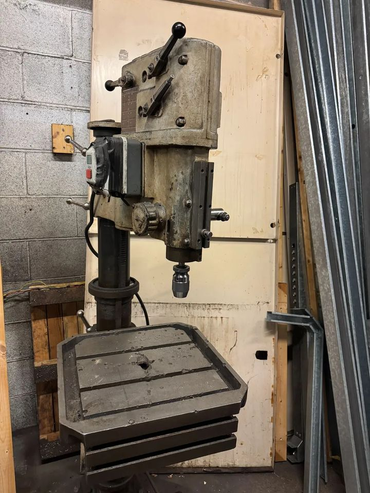
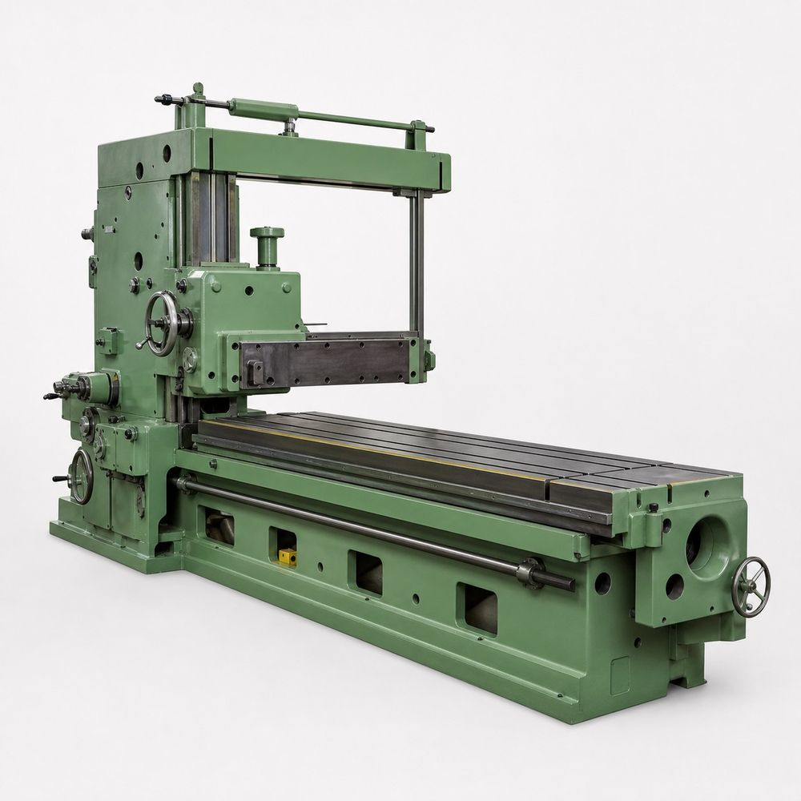
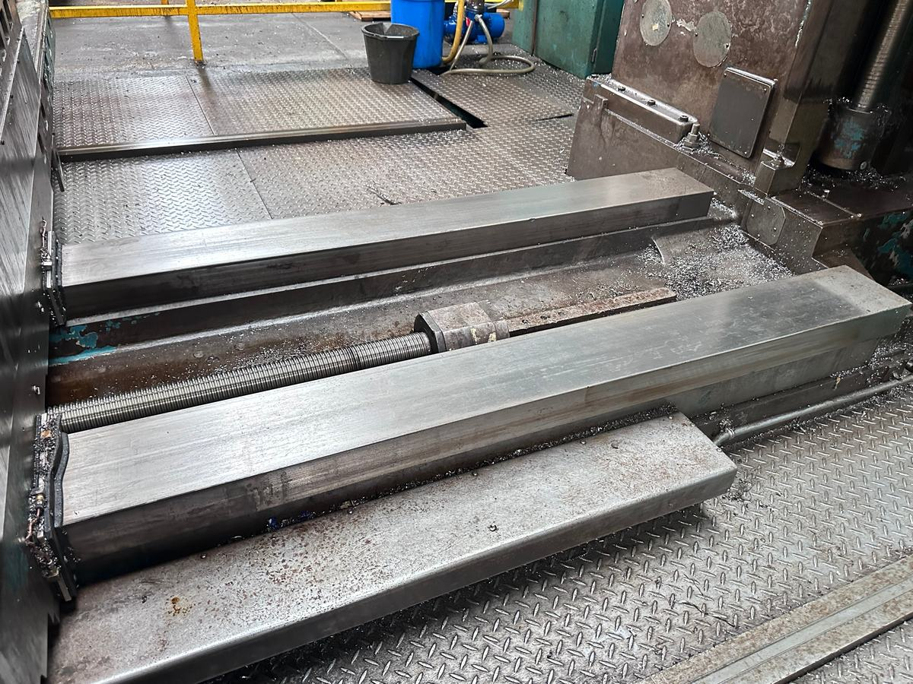
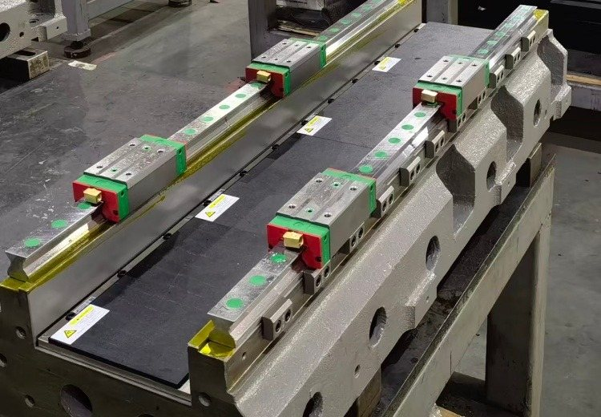
Not limited to metal works. If you can describe it, we can make it, source it or build it. Whether you are securing a tender or have a small task, we handle quoting, sourcing, fabrication and delivery.
All 14 pages of drilling, turning, milling, bending, pressing, cutting, grinding, welding and forging, in one PDF you can read here, download or share.
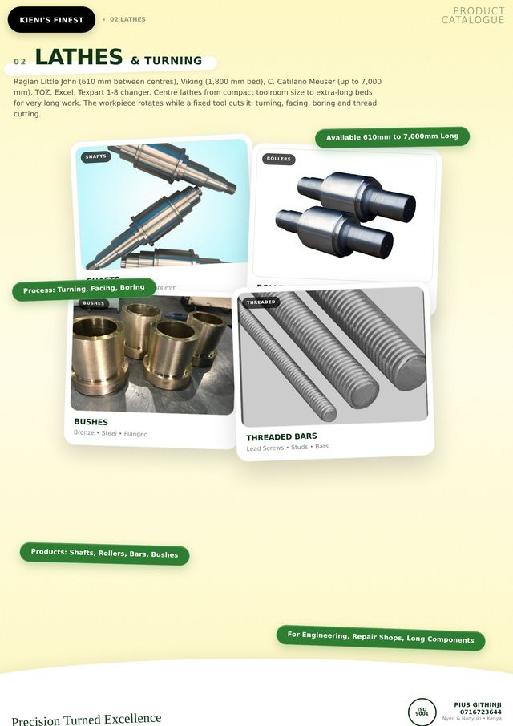
Kieni’s Finest Product Catalogue
PDF · 14 pages · about 4 MB
Send a drawing, a photo, a worn sample or a rough sketch with sizes and quantity.
We confirm the material, price and delivery time, usually the same day.
Once you agree the quote, we book your job into the workshop.
Collect from Nyeri or Nanyuki, or have it delivered across Kenya and to South Africa.
Fill in the form and your request opens in WhatsApp to Pius. Attach your drawing or a photo of the part in the chat. You can also call directly.
Shafts, rollers, bronze bushes, threaded bars, flanges and couplings, base plates and fabricated frames, drilled steel beams, laser-cut plate blanks and forged parts, plus machine beds, welded frames, tanks and pipework. If you can describe it, we can make it, source it or build it.
Yes. We run a 6,000 W CNC laser for plate up to 40 mm on a 6,500 mm bed. We also cut with a guillotine (13 mm), a circle cutter (up to 2 ft) and a saw for sections up to 400 x 500 mm.
Our centre lathes cover 610 mm up to 7,000 mm between centres, for shaft diameters from Ø20 mm to Ø600 mm.
We work from Nyeri and Nanyuki. You can collect from the workshop or have parts delivered across Kenya and to South Africa.
Send a drawing, photo or worn sample with sizes and quantity through the form on this page, or call or WhatsApp Pius Githinji on 0716 723 644. We confirm material, price and delivery time, usually the same day.
Yes. We make parts from a drawing, a sample or a sketch. Bronze bushes and shafts are often made from the worn part.
Yes. We help with quoting, sourcing, fabrication and delivery for tenders and small jobs alike, and our catalogue PDF can be attached to tender documents.